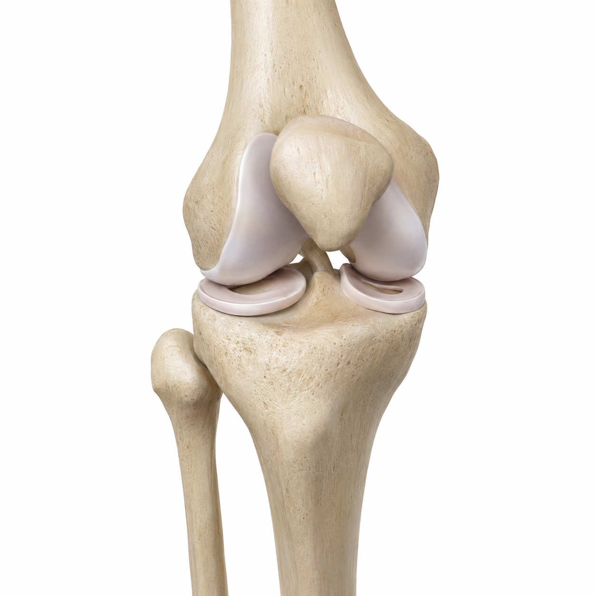
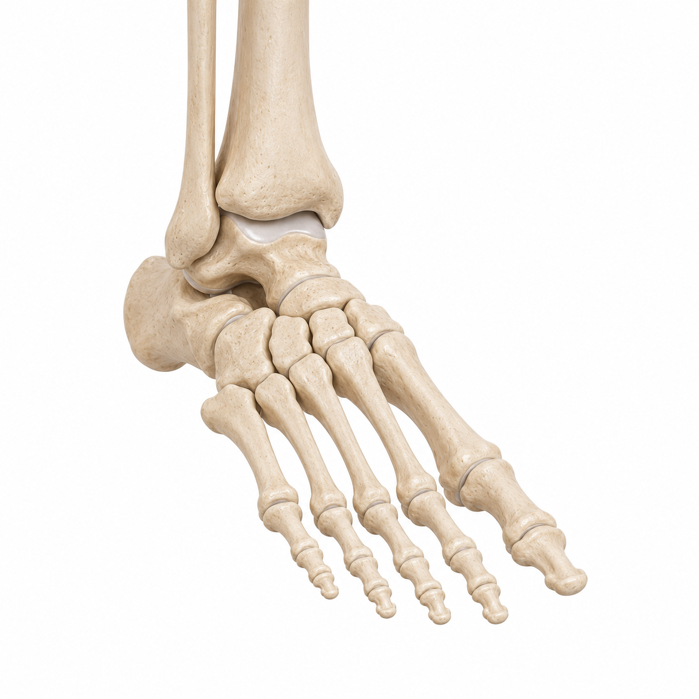

Physiotherapie Ens · Mainz
Persönliche Physiotherapie in Mainz.
Individuelle Behandlung durch immer denselben Therapeuten – mit der Zeit, die eine gründliche Untersuchung und ein nachhaltiger Behandlungsweg brauchen.
Über mich
Ein Therapeut. Ihre volle Aufmerksamkeit.
Mein Name ist Dietrich Ens. Als staatlich examinierter Physiotherapeut habe ich mich bewusst für den Weg einer persönlich geführten Einzelpraxis entschieden.
Sie treffen bei jedem Termin auf denselben Therapeuten – keine wechselnden Behandler, keine knappen Zeitfenster. Stattdessen nehme ich mir Zeit für eine gründliche Anamnese, eine sorgfältige Untersuchung und eine Behandlung, die wirklich auf Sie abgestimmt ist.
Mein Ansatz ist funktionell: Ich betrachte nicht nur die schmerzende Stelle, sondern den Zusammenhang zwischen Fuß, Knie, Hüfte, Becken und Wirbelsäule. So lassen sich Ursachen erkennen – nicht nur Symptome behandeln.
Die Praxis befindet sich derzeit im persönlichen Aufbau. Termine finden ausschließlich nach vorheriger Vereinbarung statt, in einem ruhigen und überschaubaren Rahmen – ganz bewusst ohne Laufkundschaft und ohne volle Wartebereiche.
Leistungen
Behandlung, die über das Symptom hinausblickt
Im Mittelpunkt steht die individuelle physiotherapeutische Einzelbehandlung bei Beschwerden des Bewegungsapparates – aktiv, verständlich und auf Ihr Ziel ausgerichtet.
Individuelle Einzelbehandlung
Ausführliche Termine, ganz auf Sie und Ihr Anliegen zugeschnitten.
Aktive Therapie & Training
Medizinisch orientiertes Training zum Aufbau von Kraft, Stabilität und Beweglichkeit.
Individuelle Übungsprogramme
Verständliche Übungen für zu Hause, abgestimmt auf Ihren Alltag.
Beratung zu Belastung & Bewegung
Verständliche Einordnung, wie Sie Belastung, Training und Alltag gut steuern.
Prävention & Leistungserhalt
Vorausschauende Betreuung für einen langfristigen Erhalt Ihrer Leistungsfähigkeit.
Begleitung nach Verletzung & OP
Strukturierter Wiederaufbau auf dem Weg zurück in Alltag, Beruf und Sport.
Rehabilitation einer verletzten Struktur
Beschwerden können nach einem akuten Trauma oder durch wiederholte beziehungsweise zu hohe Belastung entstehen. In einem ausführlichen Gespräch und einer gezielten Untersuchung wird eingeschätzt, welche Struktur betroffen sein könnte, welche Funktionen eingeschränkt sind und wie belastbar das Gewebe aktuell ist.
- Untersuchen und einschätzen: Anamnese und Untersuchung zeigen, welche Struktur betroffen sein könnte, welche Funktionen eingeschränkt sind und wie belastbar sie aktuell ist.
- Einflussfaktoren erkennen: Auch Trainingssteuerung, Regeneration, Schlaf, Stress oder berufliche Belastungen werden einbezogen, wenn sie im individuellen Fall relevant erscheinen.
- Belastbarkeit gezielt aufbauen: Bewegung, Kraft und Koordination werden gezielt trainiert und die Belastung wird schrittweise gesteigert.
„Ziel ist nicht, Belastung dauerhaft zu vermeiden, sondern die betroffene Struktur schrittweise wieder auf die Anforderungen von Alltag, Beruf und Sport vorzubereiten.“
Behandlungsschwerpunkte
Häufig behandelte Beschwerden
Von akuten Beschwerden bis zu langwierigen Einschränkungen – immer mit Blick auf den gesamten Bewegungsapparat.
Rücken & Lendenwirbelsäule
Nacken & Halswirbelsäule

Knie
Hüfte

Fuß & Sprunggelenk
Warum privat
Mehr Zeit. Mehr Aufmerksamkeit. Mehr Ergebnis.
Die private Praxisstruktur ermöglicht mehr Zeit, eine persönliche Betreuung und individuellere Behandlungskonzepte – statt kurzer Taktung und wechselnder Behandler.
Immer derselbe Therapeut
Kontinuität statt wechselnder Behandler bei jedem Termin.
Ausführliche Termine
Genug Zeit für Anamnese, Untersuchung und Behandlung – ohne Hetze.
Individuelle Behandlungskonzepte
Kein Schema F, sondern ein auf Sie abgestimmter Behandlungsweg.
Ruhige, diskrete Atmosphäre
Keine überfüllten Wartebereiche, keine Laufkundschaft.
Flexible frühe & späte Termine
Vormittags-, Abend- und ggf. Samstagstermine – auch für Berufstätige geeignet.
Ablauf
Vom ersten Kontakt zur Behandlung
Kontaktaufnahme
Anfrage über das Kontaktformular oder per E-Mail.
Rückmeldung & Terminfindung
Persönliche Rückmeldung und Abstimmung eines passenden Termins.
Anamnese & Untersuchung
Ausführliches Gespräch und funktionelle Untersuchung des Bewegungsapparats.
Individuelle Behandlung
Gezielte Therapie, aktive Übungen und ein verständlicher Behandlungsplan.
Langfristige Begleitung
Übungsprogramm für zu Hause und regelmäßige Verlaufskontrolle.
Erfahrungen
Patientenstimmen
Erfahrungsberichte folgen in Kürze
Die Praxis befindet sich im Aufbau. Sobald erste Patientinnen und Patienten ihre Erfahrungen teilen möchten, finden Sie diese hier.
Fragen & Antworten
Häufig gestellte Fragen
Werden gesetzliche Krankenkassen abgerechnet?
Nein. Physiotherapie Ens ist aktuell als private Praxis konzipiert und richtet sich an Privatpatientinnen und -patienten, Beihilfeberechtigte sowie Selbstzahlerinnen und Selbstzahler.
Wie kann ich einen Termin vereinbaren?
Sie können Ihre Terminanfrage bequem über das Kontaktformular oder per E-Mail senden. Teilen Sie mir dabei gerne kurz Ihr Anliegen und mögliche Wunschzeiten mit. Ich melde mich anschließend telefonisch bei Ihnen zurück, um alle weiteren Details und einen passenden Termin persönlich abzustimmen.
Zu welchen Zeiten sind Termine möglich?
Je nach Wochentag am frühen Vormittag sowie in den späten Nachmittags- und Abendstunden – dienstags und donnerstags bereits ab dem frühen Vormittag. Gegebenenfalls auch samstags.
Bietet die Praxis Hausbesuche an?
Diese Angabe wird aktuell final abgestimmt – bitte sprechen Sie mich bei Interesse gerne direkt an.
Wie läuft die erste Behandlung ab?
Am Anfang steht eine ausführliche Anamnese und funktionelle Untersuchung, auf deren Grundlage wir gemeinsam einen individuellen Behandlungsweg entwickeln.
Wo befindet sich die Praxis?
Die Praxis entsteht aktuell in Mainz. Die genaue Adresse wird hier ergänzt, sobald der Standort final feststeht.
Kontakt
Termin anfragen
Schreiben Sie mir kurz Ihr Anliegen sowie Ihre bevorzugten Zeiten – ich melde mich persönlich bei Ihnen zurück, um einen passenden Termin zu finden.